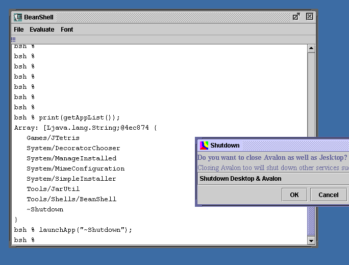

Jesktop.net - Free/Open Applications
BeanShell


Jesktop.net - Free/Open Applications | |
BeanShell

This clever command line system is unlike anything that has come before it. Its commands may be cumbersome to type, but the level of interaction with objects in the VM is second to none. Porting: We took Beanshell 1.0 in the summer and after a lot of effort migrated it to Jesktop's ancestor product PJE. The changes to the Java source numbered one - making a single method public rather than private. There were also two additions to the Java source. Both of these were inspired by the bsh scripts of the same name - BeanShell.bsh and WorkspaceEditor.bsh. News: We've updated the version of beanshell to the 1.1alpha4. As of mid Feb 2001, this is bang up to date. When you have launched beanshell, try typing the following in the command shell and pressing enter aftereach one.
dir(".");
cd("..");
print("Beanshell rocks!");
These are specific to Jesktop:
print(getAppList());
launchApp("~shutdown");
LicenseCo licensed - Sun Public License and LGPL. Main Beanshell SiteProject home site : http://www.beanshell.org/ |
Copyright (c) 2001 The Jesktop Project All rights reserved.
|
|